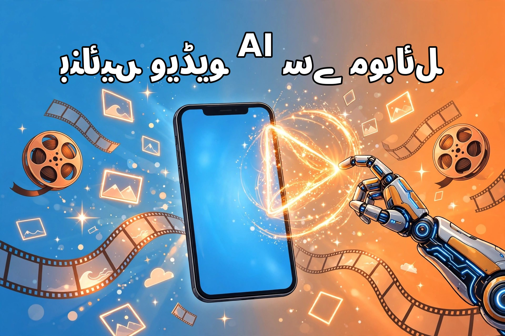

موبائل سے AI ویڈیو کیسے بنائیں؟ مکمل اردو گائیڈ

آج ویڈیو کا دور ہے — ٹک ٹاک، یوٹیوب شارٹس اور انسٹاگرام ریلز ہر جگہ چھائی ہوئی ہیں۔ کچھ سال پہلے اچھی ویڈیو بنانے کے لیے مہنگا کیمرہ، لائٹیں اور ایڈیٹنگ کی مہارت درکار تھی، مگر آرٹیفیشل انٹیلیجنس (AI) نے یہ ساری رکاوٹیں توڑ دی ہیں۔ اب آپ اپنے عام سے موبائل فون سے بھی ایسی ویڈیوز بنا سکتے ہیں جو دیکھنے میں بالکل پروفیشنل لگیں — بغیر کیمرے کے، بغیر اسٹوڈیو کے، اور اکثر تو بغیر اپنی آواز ریکارڈ کیے بھی۔ اس مضمون میں ہم قدم بہ قدم بتائیں گے کہ موبائل سے AI ویڈیو بنانے کا مکمل عمل کیا ہے۔
1۔ پہلے سمجھیں: AI ویڈیو ہوتی کیا ہے؟
AI ویڈیو کا مطلب یہ نہیں کہ روبوٹ آپ کے لیے سب کچھ کر دے گا — بلکہ AI آپ کے معاون کے طور پر کام کرتا ہے۔ اس کی چند عام صورتیں یہ ہیں: متن سے ویڈیو (آپ لکھیں، AI مناظر بنا دے)، تصویر سے ویڈیو (ساکن تصویر میں حرکت پیدا کرنا)، AI وائس اوور (لکھا ہوا متن بولتی ہوئی آواز میں بدلنا)، اور خودکار کیپشن (ویڈیو پر الفاظ خود بخود لکھ جانا)۔ آپ کو ان سب میں ماہر ہونے کی ضرورت نہیں — شروع میں صرف ایک دو ٹولز سیکھنا کافی ہے۔
2۔ مقصد طے کریں: ویڈیو کس کے لیے بنا رہے ہیں؟
کام شروع کرنے سے پہلے تین باتیں لکھ لیں۔ پلیٹ فارم: یوٹیوب شارٹس، ٹک ٹاک اور ریلز کے لیے عمودی (کھڑی) ویڈیو بنتی ہے، جبکہ عام یوٹیوب ویڈیو کے لیے افقی (لیٹی ہوئی)۔ موضوع: کہانی، تعلیمی معلومات، یا کاروبار کا اشتہار — ایک ویڈیو میں ایک ہی موضوع رکھیں۔ لمبائی: شروع میں 30 سے 60 سیکنڈ کی مختصر ویڈیوز بہترین رہتی ہیں؛ چھوٹی ویڈیو بنانا آسان بھی ہے اور ناظرین آخر تک دیکھتے بھی ہیں۔
3۔ اسکرپٹ لکھیں — AI آپ کا رائٹر بنے
ہر اچھی ویڈیو کے پیچھے اچھا اسکرپٹ ہوتا ہے۔ ChatGPT یا Gemini جیسے AI ٹول سے آپ اردو یا انگریزی میں اسکرپٹ لکھوا سکتے ہیں — بس واضح ہدایت دیں، مثلاً: "بجلی کے بل پر 60 سیکنڈ کی آسان اردو اسکرپٹ لکھو"۔ ایک اصول یاد رکھیں: ایک منٹ کی ویڈیو کے لیے تقریباً 120 سے 140 الفاظ کافی ہوتے ہیں۔ اسکرپٹ کے پہلے تین سیکنڈ میں ناظر کی توجہ پکڑیں — سوال پوچھیں یا حیران کن بات کہیں۔ جملے چھوٹے رکھیں اور ایک جملے میں ایک ہی خیال بیان کریں۔
4۔ آواز: اپنی ریکارڈ کریں یا AI سے بنوائیں؟
اگر آپ کیمرے کے سامنے آنے سے گھبراتے ہیں تو بھی آواز آپ کی اپنی ہو تو ویڈیو زیادہ قدرتی اور قابلِ اعتماد لگتی ہے۔ خاموش کمرے میں موبائل کو منہ کے قریب رکھ کر ریکارڈ کریں — یہی کافی ہے۔ البتہ اگر آپ اپنی آواز نہیں دینا چاہتے تو AI وائس اوور ٹولز موجود ہیں جو لکھے ہوئے متن کو بولتی آواز میں بدل دیتے ہیں۔ ایک بات ذہن میں رکھیں: اردو میں AI آوازوں کا معیار انگریزی جتنا اچھا نہیں، اس لیے اردو ویڈیو کے لیے اپنی آواز بہتر نتیجہ دیتی ہے۔ ہماری چیٹ جی پی ٹی اردو گائیڈ میں اسکرپٹ لکھنے کی مزید ترکیبیں مل جائیں گی۔
5۔ ویژولز تیار کریں: تصویریں اور مناظر
آواز کے ساتھ نظر آنے والے مناظر ویڈیو کی جان ہیں۔ تین آسان ذرائع ہیں: AI سے بنی تصویریں — مفت AI امیج ٹولز میں اپنا منظر لکھ کر تصویر بنوائیں؛ مفت اسٹاک فوٹیج — ایسی ویب سائٹس سے جو بغیر قیمت کے ویڈیو کلپس دیتی ہیں؛ اور اپنی شوٹنگ — دن کی روشنی میں موبائل سے بنائی گئی سادہ ویڈیو بھی کافی اچھی لگتی ہے۔ جو بھی ذریعہ چنیں، ایک بات کا خیال رکھیں: منظر آپ کے اسکرپٹ سے میل کھاتا ہو، ورنہ ناظر الجھن میں پڑ جاتا ہے۔
6۔ موبائل پر ایڈیٹنگ: CapCut میں قدم بہ قدم
اب سب کچھ جوڑنے کا وقت ہے۔ CapCut جیسی مفت موبائل ایپ میں یہ ترتیب اپنائیں:
- نیا پراجیکٹ بنائیں اور اپنے کلپس اور آواز امپورٹ کریں۔
- غیر ضروری حصے کاٹ دیں — خاموشی کے لمبے وقفے اور غلطیاں نکال دیں۔
- خودکار کیپشن لگائیں — اکثر لوگ ویڈیو بغیر آواز کے دیکھتے ہیں، کیپشن انہیں روکے رکھتا ہے۔
- بیک گراؤنڈ میوزک بہت ہلکا رکھیں اور صرف کاپی رائٹ فری موسیقی استعمال کریں۔
- ہلکے ٹرانزیشن اور زوم اثرات سے ویڈیو میں جان ڈالیں — مگر حد سے زیادہ اثرات ویڈیو کو بھاری بنا دیتے ہیں۔
- ایکسپورٹ کرتے وقت 1080p کوالٹی منتخب کریں تاکہ ویڈیو صاف نظر آئے۔
7۔ تھمب نیل اور عنوان پر توجہ دیں
ناظر پہلے تھمب نیل دیکھتا ہے، ویڈیو بعد میں کھولتا ہے۔ تھمب نیل پر بڑے واضح الفاظ میں ویڈیو کا اصل نکتہ لکھیں اور روشن رنگ استعمال کریں۔ عنوان میں وہ الفاظ ضرور شامل کریں جو لوگ تلاش میں لکھتے ہیں — مثلاً "موبائل سے AI ویڈیو بنانے کا طریقہ"۔ اچھا تھمب نیل اور عنوان آدھی کامیابی ہے۔
8۔ اپلوڈ کے وقت AI کا اعلان ضرور کریں
یہ سب سے اہم نکتہ ہے جسے نئے تخلیق کار نظرانداز کر دیتے ہیں۔ یوٹیوب، ٹک ٹاک اور انسٹاگرام کی پالیسی کے مطابق AI سے بنی یا بدلی ہوئی ویڈیو پر AI لیبل لگانا ضروری ہے۔ اپلوڈ کے دوران "AI-generated content" والا آپشن ضرور آن کریں۔ یہ نہ صرف پلیٹ فارم کا اصول ہے بلکہ ناظرین کا اعتماد بھی بڑھاتا ہے۔ لیبل چھپانا یا جھوٹا دعویٰ کرنا اکاؤنٹ کے لیے خطرناک ہو سکتا ہے۔
9۔ وہ عام غلطیاں جن سے بچنا ہے
شروع میں اکثر لوگ یہ غلطیاں کرتے ہیں: واٹر مارک والے مفت ٹولز کا آؤٹ پٹ استعمال کرنا (ویڈیو پر کمپنی کا نشان برا لگتا ہے)، کاپی رائٹ والی موسیقی لگانا (ویڈیو ڈیلیٹ یا آمدنی بند ہو سکتی ہے)، بہت لمبی ویڈیو بنانا، اور ہر ویڈیو میں ایک ہی طرز دہرانا۔ ہر ویڈیو سے کچھ نیا سیکھیں اور ناظرین کے تبصروں سے اپنی سمت درست کرتے رہیں۔
خلاصہ
موبائل سے AI ویڈیو بنانا کوئی جادو نہیں — یہ ایک واضح عمل ہے: مقصد طے کریں، AI سے اسکرپٹ لکھوائیں، آواز تیار کریں، مناسب ویژولز چنیں، CapCut میں ایڈٹ کریں، اچھا تھمب نیل بنائیں، اور اپلوڈ کے وقت AI کا اعلان ضرور کریں۔ پہلی ویڈیو کامل نہیں ہوگی، اور یہ بالکل ٹھیک ہے — دسویں ویڈیو تک آپ خود حیران ہوں گے کہ کتنا بہتر ہو گئے ہیں۔ آج ہی اپنی پہلی 30 سیکنڈ کی ویڈیو بنائیں اور سفر شروع کریں۔